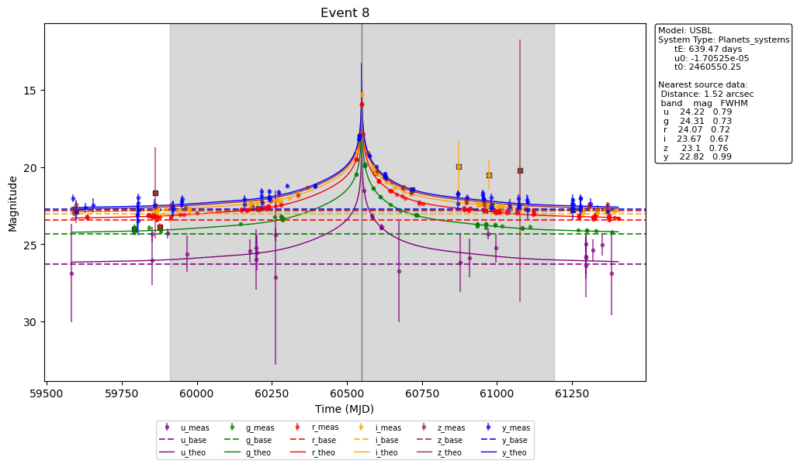

[1]:
import os
import pandas as pd
# from simulation_pipeline import SimPipeline
import importlib
import simulation_pipeline
importlib.reload(simulation_pipeline)
from simulation_pipeline import SimPipeline
Create a simulation instance
From config file path
[5]:
sim_name = "new_test"
sim = SimPipeline(from_folder = sim_name, new=False)
[2]:
CONFIG_PATH = "config_file.yaml"
sim = SimPipeline(CONFIG_PATH)
[3]:
sim
[3]:
SimPipeline: new_test
=====================
General configuration:
- Number of events: 20
- Model: USBL
- System type: Planets_systems
- Sources catalog: AstroDataLab
- Bands: u, g, r, i, z, y
- Simulation type: lsst_images
- Data Preview: dp0
Sky region:
- Distribution: circle
- Center: (ra=62, dec=-36) deg (icrs)
- Radius: 0.05 deg
- Blend distance: 0.001 deg
- Survey dates (MJD): 60849 to 61944
- Peak range (MJD): 61579 to 63769.25
Processing:
- Event processor: ulens
- Photometry processor: synthetic
Directories:
- Output dir: runs/new_test
- Data events: runs/new_test/data-events_1.parquet
- Photometry: runs/new_test/photometry_1.parquet
- Calexps photometry: runs/new_test/calexps-photometry_1.parquet
Simulate light curves
[4]:
results_events = sim.simulate_lightcurves()
Collecting calexps for bands ('u', 'g', 'r', 'i', 'z', 'y')...
Found 999 calexps.
Loading data from dp02_dc2_catalogs.CcdVisit...
Records found: 5256
Chunk 1: 100%|██████████| 2/2 [00:06<00:00, 3.50s/it]:00<?, ?it/s]
Chunk 6: 100%|██████████| 2/2 [00:07<00:00, 3.51s/it]
Chunk 5: 100%|██████████| 2/2 [00:07<00:00, 3.56s/it]
Chunk 0: 100%|██████████| 2/2 [00:07<00:00, 3.65s/it]
Chunk 7: 100%|██████████| 2/2 [00:07<00:00, 3.66s/it]:07<01:05, 7.30s/it]
Chunk 4: 100%|██████████| 2/2 [00:07<00:00, 3.69s/it]
Chunk 3: 100%|██████████| 2/2 [00:07<00:00, 3.71s/it]
Chunk 2: 100%|██████████| 2/2 [00:07<00:00, 3.76s/it]
Chunk 8: 100%|██████████| 2/2 [00:02<00:00, 1.21s/it]:07<00:13, 1.98s/it]
Chunk 9: 100%|██████████| 2/2 [00:02<00:00, 1.22s/it]:09<00:00, 1.40it/s]
Running parallel processing: 100%|██████████| 10/10 [00:09<00:00, 1.06it/s]
Check succes or errors
[5]:
print(results_events.loc[5].error)
[5]:
results_events
[5]:
| event_id | status | error | |
|---|---|---|---|
| 0 | 3 | success | |
| 1 | 4 | success | |
| 2 | 13 | success | |
| 3 | 14 | success | |
| 4 | 11 | success | |
| 5 | 12 | success | |
| 6 | 1 | success | |
| 7 | 2 | success | |
| 8 | 15 | success | |
| 9 | 16 | success | |
| 10 | 9 | success | |
| 11 | 10 | success | |
| 12 | 7 | success | |
| 13 | 8 | success | |
| 14 | 5 | success | |
| 15 | 6 | success | |
| 16 | 17 | success | |
| 17 | 18 | success | |
| 18 | 19 | success | |
| 19 | 20 | success |
Inspect results
[53]:
# from simulation_pipeline import SimPipeline
import importlib
import light_curves
importlib.reload(light_curves)
from light_curves import Event
event = Event.from_parquet(8, sim.calexps_photometry_file, sim.events_file)
[54]:
event.plot(show_ideal=False, simulate_ideal=True)
[54]:
<Axes: title={'center': 'Event 8'}, xlabel='Time (MJD)', ylabel='Magnitude'>

[56]:
from analysis import plot_event_fov
plot_event_fov(8, sim.name)
[61]:
import pandas as pd
ev = pd.read_parquet(sim.events_file)
# ev.columns
# pd.read_csv("runs/new_test/AstroDataLab_event_sources_catalog.csv")
ph = pd.read_parquet(sim.photometry_file)
If simulation type is “lsst_images”, you can load nearby objects as follows
[6]:
sim.load_nearby_objects()
Loading data from dp02_dc2_catalogs.Object...
Records found: 6639
[7]:
results_calexps = sim.process_synthetic_photometry()
Chunk 3: 100%|██████████| 125/125 [10:41<00:00, 5.13s/it], ?it/s]
Chunk 7: 100%|██████████| 124/124 [10:43<00:00, 5.19s/it]
Chunk 1: 100%|██████████| 125/125 [10:44<00:00, 5.16s/it]
Chunk 2: 100%|██████████| 125/125 [10:45<00:00, 5.17s/it]
Chunk 6: 100%|██████████| 125/125 [10:46<00:00, 5.17s/it]
Chunk 4: 100%|██████████| 125/125 [10:47<00:00, 5.18s/it]
Chunk 5: 100%|██████████| 125/125 [10:57<00:00, 5.26s/it]
Chunk 0: 100%|██████████| 125/125 [10:58<00:00, 5.27s/it]
Running parallel processing: 100%|██████████| 8/8 [10:58<00:00, 82.32s/it]
[11]:
results_calexps.error.value_counts()
[11]:
error
779
No sources to inject: skipping this calexp 220
Name: count, dtype: int64
[10]:
print(results_calexps[results_calexps["calexp_id"]==252].error)
376
Name: error, dtype: object
[9]:
results_calexps
[9]:
| calexp_id | status | error | |
|---|---|---|---|
| 0 | 375 | success | |
| 1 | 376 | failed | No sources to inject: skipping this calexp |
| 2 | 377 | success | |
| 3 | 378 | success | |
| 4 | 379 | success | |
| ... | ... | ... | ... |
| 994 | 120 | success | |
| 995 | 121 | failed | No sources to inject: skipping this calexp |
| 996 | 122 | success | |
| 997 | 123 | success | |
| 998 | 124 | success |
999 rows × 3 columns
Analysis
[21]:
import analysis
importlib.reload(analysis)
from analysis import plot_sky_map, generate_time_log, generate_summary_plot
plot_sky_map(sim.name, zoom = 0.05)
Loading data from dp02_dc2_catalogs.Source...
Records found: 138380
[46]:
import analysis
importlib.reload(analysis)
from analysis import plot_sky_map, generate_time_log, generate_summary_plot
generate_time_log(sim.name)
generate_summary_plot(sim.name)
[46]:
( item task \
4 Calexp Loading calexp
6 Calexp Measuring
3 Calexp Injecting
5 Calexp Loading events for injection
8 Calexp Saving photometry results
.. ... ...
203 lsst.measurement Performing forced measurement on 7 sources
204 lsst.measurement Performing forced measurement on 8 sources
205 lsst.measurement Performing forced measurement on 9 sources
206 process_synthetic_photometry process_synthetic_photometry
207 simulate_lightcurves simulate_lightcurves
count total_duration mean_duration
4 999 4495.080 0.595217
6 779 321.609 0.042586
3 999 298.057 0.039467
5 999 17.582 0.002328
8 779 7.229 0.000957
.. ... ... ...
203 35 0.000 0.000000
204 27 0.000 0.000000
205 24 0.000 0.000000
206 2 663.891 331.945500
207 2 26.145 13.072500
[208 rows x 5 columns],
item count total_duration
0 Calexp 7552 5149.976
5 process_synthetic_photometry 2 663.891
1 Event 100 62.345
6 simulate_lightcurves 2 26.145
2 load_nearby_objects 2 8.292
4 lsst.measurement 779 0.000
3 lsst.injection 6127 0.000)
[50]:
results_df = sim.compute_events_chi2()
Chunk 2: 100%|██████████| 2/2 [00:03<00:00, 1.69s/it]:00<?, ?it/s]
Chunk 0: 100%|██████████| 2/2 [00:03<00:00, 1.75s/it]
Chunk 3: 100%|██████████| 2/2 [00:03<00:00, 1.78s/it]:03<00:31, 3.50s/it]
Chunk 1: 100%|██████████| 2/2 [00:03<00:00, 1.83s/it]
Chunk 7: 100%|██████████| 2/2 [00:03<00:00, 1.83s/it]:03<00:12, 1.54s/it]
Chunk 5: 100%|██████████| 2/2 [00:03<00:00, 1.88s/it]
Chunk 6: 100%|██████████| 2/2 [00:03<00:00, 1.88s/it]
Chunk 4: 100%|██████████| 2/2 [00:03<00:00, 1.94s/it]
Chunk 8: 100%|██████████| 2/2 [00:00<00:00, 2.35it/s]:03<00:02, 2.03it/s]
Chunk 9: 100%|██████████| 2/2 [00:00<00:00, 2.64it/s]:04<00:00, 3.88it/s]
Running parallel processing: 100%|██████████| 10/10 [00:04<00:00, 2.35it/s]
[51]:
results_df
[51]:
| event_id | status | error | |
|---|---|---|---|
| 0 | 1 | success | |
| 1 | 14 | success | |
| 2 | 13 | success | |
| 3 | 3 | success | |
| 4 | 15 | success | |
| 5 | 9 | success | |
| 6 | 7 | success | |
| 7 | 11 | success | |
| 8 | 8 | success | |
| 9 | 6 | success | |
| 10 | 10 | success | |
| 11 | 16 | success | |
| 12 | 12 | success | |
| 13 | 2 | success | |
| 14 | 5 | success | |
| 15 | 4 | success | |
| 16 | 17 | success | |
| 17 | 19 | success | |
| 18 | 18 | success | |
| 19 | 20 | success |
[52]:
pd.read_parquet(sim.events_file)
[52]:
| event_id | ra | dec | model | system_type | points | logL | logTe | D_L | D_S | ... | p_value_r | p_value_u | p_value_y | p_value_z | dof_g | dof_i | dof_r | dof_u | dof_y | dof_z | |
|---|---|---|---|---|---|---|---|---|---|---|---|---|---|---|---|---|---|---|---|---|---|
| 0 | 13 | 61.986305 | -35.993687 | USBL | Planets_systems | 491 | -2.169 | 3.5707 | 5248.0 | 7889.0 | ... | 6.170076e-239 | 3.245981e-02 | 5.028333e-03 | 1.586426e-16 | 53.0 | 99.0 | 108.0 | 32.0 | 80.0 | 50.0 |
| 1 | 3 | 61.966808 | -36.003048 | USBL | Planets_systems | 491 | 1.659 | 3.7111 | 6834.0 | 7359.0 | ... | 0.000000e+00 | 0.000000e+00 | 0.000000e+00 | 0.000000e+00 | 52.0 | 101.0 | 110.0 | 34.0 | 78.0 | 48.0 |
| 2 | 7 | 62.009853 | -35.979130 | USBL | Planets_systems | 491 | -0.023 | 3.7699 | 6965.0 | 7516.0 | ... | 0.000000e+00 | NaN | 0.000000e+00 | 0.000000e+00 | 52.0 | 96.0 | 107.0 | 36.0 | 79.0 | 49.0 |
| 3 | 11 | 62.006210 | -35.961353 | USBL | Planets_systems | 491 | -1.677 | 3.6234 | 7887.0 | 7989.0 | ... | 4.739302e-01 | 2.113814e-01 | 6.926081e-02 | 1.288388e-01 | 53.0 | 101.0 | 103.0 | 31.0 | 74.0 | 50.0 |
| 4 | 1 | 62.034294 | -36.027569 | USBL | Planets_systems | 491 | -2.298 | 3.5191 | 4581.0 | 7715.0 | ... | 3.467976e-01 | 2.781362e-01 | 7.064363e-01 | 2.075542e-03 | 52.0 | 102.0 | 106.0 | 34.0 | 79.0 | 49.0 |
| 5 | 14 | 62.058517 | -35.988567 | USBL | Planets_systems | 491 | -1.186 | 3.6664 | 6545.0 | 7158.0 | ... | 0.000000e+00 | 0.000000e+00 | 0.000000e+00 | 0.000000e+00 | 53.0 | 103.0 | 108.0 | 34.0 | 76.0 | 51.0 |
| 6 | 15 | 62.055229 | -35.979580 | USBL | Planets_systems | 491 | -1.701 | 3.5808 | 3828.0 | 7901.0 | ... | 0.000000e+00 | 4.399416e-01 | 0.000000e+00 | 0.000000e+00 | 55.0 | 99.0 | 105.0 | 33.0 | 74.0 | 48.0 |
| 7 | 9 | 61.971760 | -36.030972 | USBL | Planets_systems | 491 | -0.968 | 3.6864 | 4616.0 | 7994.0 | ... | 0.000000e+00 | 1.881908e-02 | 2.403833e-73 | 0.000000e+00 | 52.0 | 95.0 | 110.0 | 29.0 | 76.0 | 48.0 |
| 8 | 5 | 62.034660 | -35.981194 | USBL | Planets_systems | 491 | -2.174 | 3.5934 | 3573.0 | 6326.0 | ... | 8.760936e-01 | 1.312552e-01 | 1.008930e-01 | 8.158348e-01 | 52.0 | 101.0 | 111.0 | 34.0 | 77.0 | 49.0 |
| 9 | 4 | 61.978260 | -36.024632 | USBL | Planets_systems | 491 | -3.020 | 3.4340 | 7332.0 | 7353.0 | ... | 1.736299e-05 | 5.313865e-01 | 2.197062e-01 | 7.087297e-02 | 52.0 | 93.0 | 110.0 | 30.0 | 76.0 | 48.0 |
| 10 | 10 | 61.987141 | -36.002804 | USBL | Planets_systems | 491 | -1.306 | 3.6458 | 6905.0 | 7653.0 | ... | 4.862744e-05 | 8.844074e-01 | 6.979194e-01 | 2.215075e-01 | 51.0 | 93.0 | 109.0 | 31.0 | 81.0 | 51.0 |
| 11 | 16 | 62.050762 | -35.981724 | USBL | Planets_systems | 491 | -0.023 | 3.7699 | 5436.0 | 5547.0 | ... | 0.000000e+00 | 0.000000e+00 | 0.000000e+00 | 0.000000e+00 | 54.0 | 99.0 | 99.0 | 32.0 | 72.0 | 47.0 |
| 12 | 12 | 61.995205 | -35.979721 | USBL | Planets_systems | 491 | -2.429 | 3.4835 | 5872.0 | 7203.0 | ... | 6.292519e-04 | 8.514533e-01 | 6.857833e-01 | 1.172805e-01 | 52.0 | 100.0 | 107.0 | 34.0 | 78.0 | 50.0 |
| 13 | 2 | 61.992966 | -35.982212 | USBL | Planets_systems | 491 | -2.080 | 3.6163 | 2758.0 | 6055.0 | ... | 9.882754e-01 | 6.260478e-01 | 6.451013e-02 | 5.023511e-19 | 51.0 | 102.0 | 106.0 | 33.0 | 77.0 | 50.0 |
| 14 | 8 | 61.966984 | -35.976086 | USBL | Planets_systems | 491 | -1.474 | 3.6386 | 1832.0 | 7772.0 | ... | 0.000000e+00 | 2.211696e-236 | 0.000000e+00 | 0.000000e+00 | 48.0 | 99.0 | 106.0 | 30.0 | 78.0 | 49.0 |
| 15 | 6 | 62.045471 | -35.975319 | USBL | Planets_systems | 491 | -1.934 | 3.5520 | 5568.0 | 6203.0 | ... | 2.394904e-02 | 9.437494e-01 | 9.732254e-03 | 5.873648e-01 | 54.0 | 99.0 | 103.0 | 33.0 | 72.0 | 50.0 |
| 16 | 17 | 62.032154 | -36.009220 | USBL | Planets_systems | 491 | -2.912 | 3.4496 | 2817.0 | 5156.0 | ... | 4.214567e-01 | 3.702088e-01 | 7.029415e-01 | 6.609165e-01 | 50.0 | 100.0 | 101.0 | 34.0 | 74.0 | 47.0 |
| 17 | 19 | 62.021210 | -36.037632 | USBL | Planets_systems | 491 | -0.239 | 3.7338 | 7642.0 | 7881.0 | ... | 8.145106e-01 | 3.931846e-01 | 5.595125e-01 | 3.526637e-01 | 52.0 | 93.0 | 109.0 | 32.0 | 79.0 | 49.0 |
| 18 | 18 | 61.997005 | -36.015438 | USBL | Planets_systems | 491 | -1.001 | 3.6500 | 7377.0 | 7671.0 | ... | 0.000000e+00 | 6.386555e-04 | 1.237014e-311 | 0.000000e+00 | 51.0 | 97.0 | 105.0 | 30.0 | 80.0 | 46.0 |
| 19 | 20 | 62.039639 | -36.008492 | USBL | Planets_systems | 491 | -1.499 | 3.5880 | 6743.0 | 7998.0 | ... | 7.357156e-12 | 2.541213e-01 | 9.072839e-03 | 1.124680e-02 | 50.0 | 99.0 | 104.0 | 34.0 | 74.0 | 49.0 |
20 rows × 105 columns
[1]:
import analysis
import importlib
importlib.reload(analysis)
from analysis import plot_event_fov
plot_event_fov(8, "new_test")
[ ]: